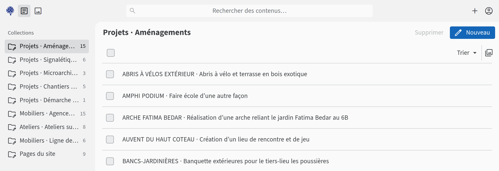
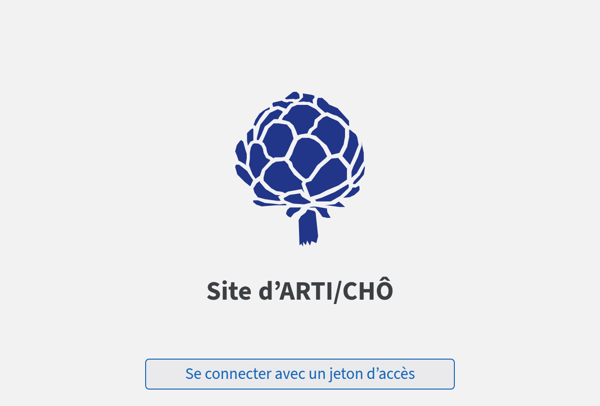
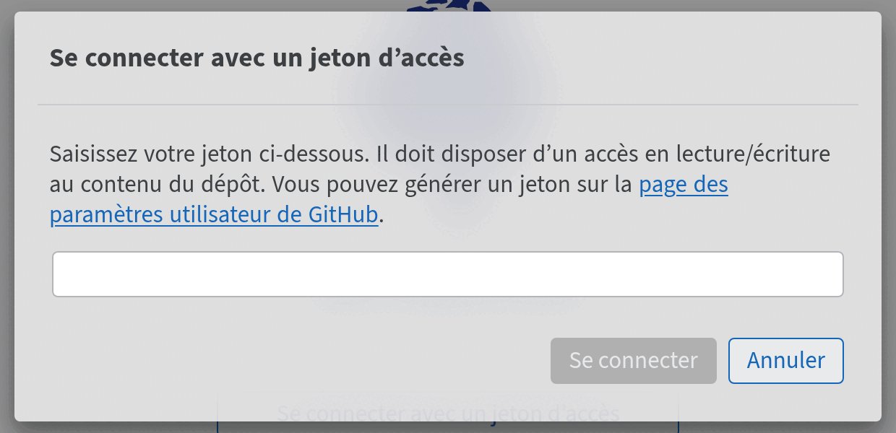
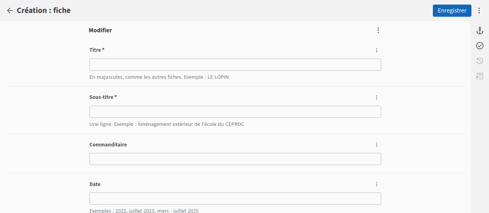
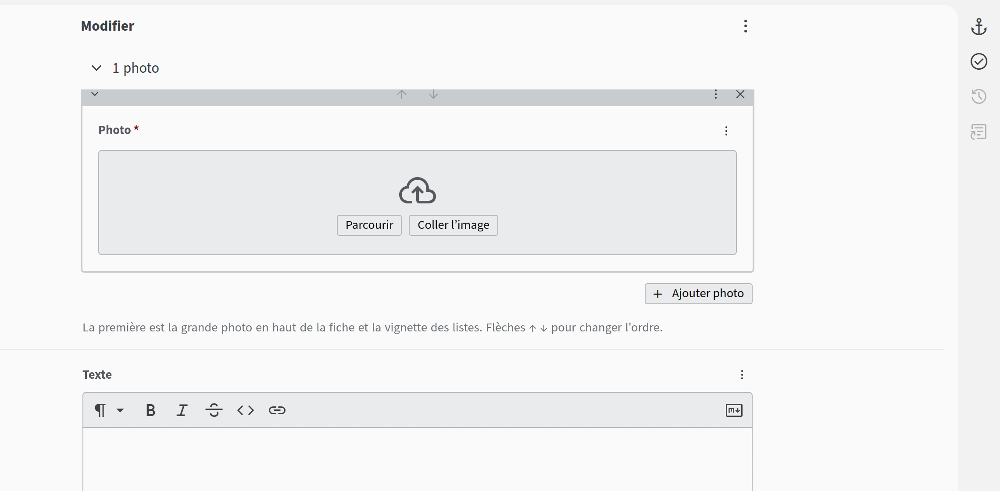
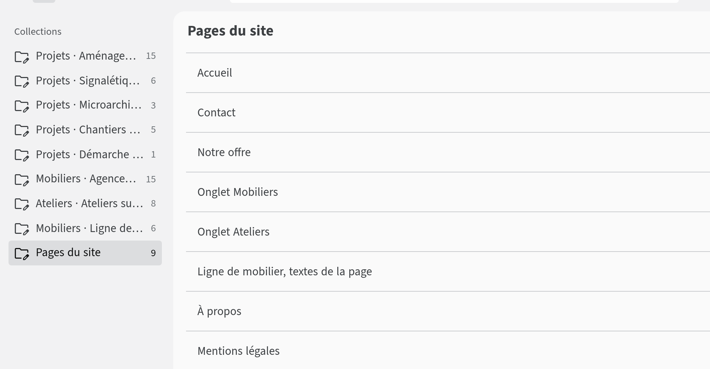
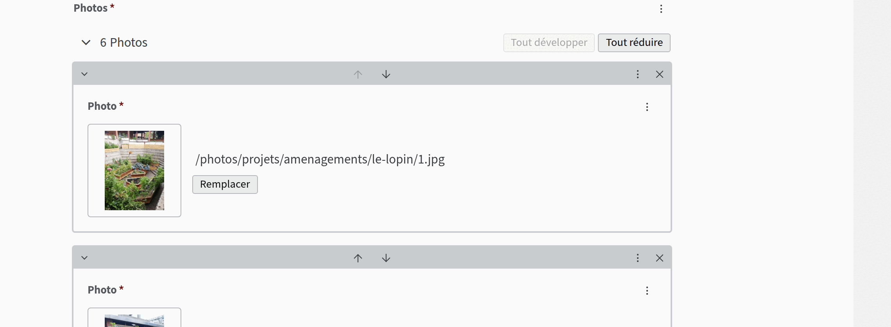
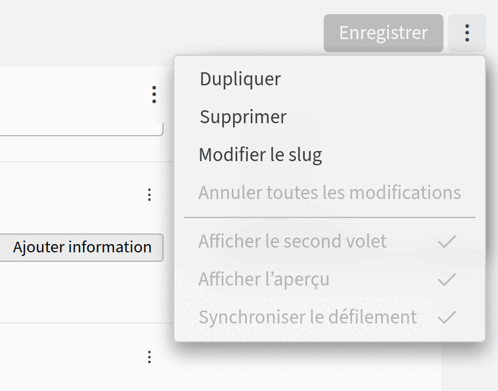
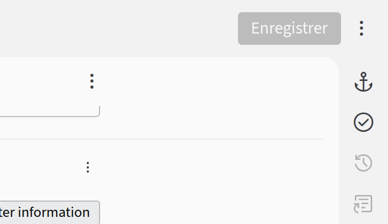

Une page d’administration, des formulaires, et c’est en ligne. Pas de code, rien à installer, rien à payer. Ce qui est enregistré est publié : personne ne relit, alors on relit avant d’enregistrer.
L’adresse à retenir
collectifarticho.com/admin
Depuis un ordinateur ou un téléphone, avec n’importe quel navigateur.
Comment ça marche
On ouvre collectifarticho.com/admin.
La première fois sur un appareil, on colle le jeton du collectif. Il est dans le gestionnaire de mots de passe de la SCOP (fiche 2).
On choisit une rubrique ou une page et on remplit le formulaire (fiche 3).
On clique sur Enregistrer. Une à deux minutes plus tard, c’est sur le site.
Rien n’est jamais perdu
Chaque enregistrement est gardé dans l’historique du site, même une fiche supprimée. Une erreur se corrige toujours (fiche 4).

1234
1Les rubriques du site, une par sous-onglet : Projets · Aménagements, Mobiliers · Agencements…
2Nouveau ajoute une fiche dans la rubrique ouverte. Sur téléphone, c’est un crayon rond.
3Pages du site : l’accueil, le contact, notre offre, à propos, les mentions légales…
4Le compte, pour Se déconnecter d’un ordinateur qui n’est pas à soi.
Ça se fait ici
Ajouter, modifier ou retirer un projet, un meuble, un atelier, avec ses photos.
Les photos viennent directement du téléphone : elles sont réduites toutes seules.
Le contact, notre offre et sa plaquette, les onglets Mobiliers et Ateliers.
À propos, mentions légales, conditions générales.
Ça ne se fait pas ici
On demande à Lou :
créer, renommer ou supprimer une rubrique ou un onglet ;
changer la mise en page, les couleurs, les polices ;
le menu et le pied de page ;
déplacer les points de la carte du contact ;
le nom de domaine et les adresses mail.
Les autres fiches : 2. Le jeton · 3. Ajouter un projet · 4. Modifier, supprimer, réparerARTI/CHÔ · octobre 2026
Guide du site · 2 sur 4 · se connecter
Le jeton, la clé du site
Pas de mot de passe pour modifier le site : un jeton, une longue suite de caractères qui commence par github_pat_. Il est rangé dans le gestionnaire de mots de passe de la SCOP. Il n’ouvre que le site : ni le mail, ni le reste.
Se connecter

2

34
Ouvrir collectifarticho.com/admin.
Cliquer sur Se connecter avec un jeton d’accès.
Coller le jeton dans le champ.
Cliquer sur Se connecter.
Le navigateur s’en souvient : la fois suivante, on arrive directement sur les rubriques. Sur un ordinateur qui n’est pas à soi, se déconnecter à la fin : le rond en haut à droite, puis Se déconnecter.
Refaire un jeton
S’il est perdu, s’il a pu être vu par quelqu’un d’autre, ou si l’administration répond « Le jeton fourni n’est pas valide ». Sur github.com, connecté·e avec le compte collectif-articho (identifiants et codes de secours dans le gestionnaire de mots de passe). Les écrans de GitHub sont en anglais :
La photo du compte, en haut à droite, puis Settings.
Tout en bas de la colonne de gauche : Developer settings.
Personal access tokens, Fine-grained tokens, Generate new token.
Token name : CMS du site. Expiration : No expiration.
Repository access : Only select repositories, puis collectif-articho.github.io.
Permissions : Contents, en Read and write. Rien d’autre.
Generate token, copier le jeton et le ranger dans le gestionnaire, à la place de l’ancien. GitHub ne le montre qu’une fois.
Si l’ancien a pu fuiter : dans la liste des Fine-grained tokens, le supprimer (Delete).
Puis se reconnecter avec le nouveau sur chaque appareil.
1. Vue d’ensemble · 2. Le jeton · 3. Ajouter un projet · 4. Modifier, supprimer, réparercollectifarticho.com/admin
Guide du site · 3 sur 4 · ajouter un projet
Un nouveau projet en huit étapes
À gauche, choisir la rubrique : Projets · Aménagements, Mobiliers · Agencements, Ateliers…
Cliquer sur Nouveau (sur téléphone, le crayon rond).
Titre en majuscules, comme les autres fiches, et sous-titre sur une ligne. L’adresse de la page est tirée du titre à la création, puis ne bouge plus : bien le choisir dès le départ.
Les informations utiles : commanditaire, date, lieu, intervention, matériaux. Laisser vides celles qui ne servent pas. Une autre (Collaboration, Partenaires…) : Ajouter information.
Ajouter photo…
… puis Parcourir et choisir la photo. Recommencer pour chacune. La première est la grande photo de la fiche et sa vignette dans les listes.
Le texte. La barre d’outils met en gras, en italique, ajoute un lien. Une ligne vide sépare deux paragraphes.
Enregistrer, en haut à droite. Sur le site une à deux minutes plus tard.

38
Le haut du formulaire. Les champs marqués d’une étoile sont obligatoires ; sous chacun, une aide et un exemple.

567
Plus bas : une case par photo, puis le texte et sa barre d’outils.
Bon à savoir
Les photos du téléphone vont très bien telles quelles : elles sont réduites avant l’envoi.
Connexion lente (train, 4G faible) : deux ou trois photos, enregistrer, puis les suivantes. « NetworkError » : l’envoi a pris trop de temps, recommencer avec moins de photos.
Ordre dans la rubrique, en bas du formulaire : 1 pour la placer en premier. Vide, elle va en fin de liste.
1. Vue d’ensemble · 2. Le jeton · 3. Ajouter un projet · 4. Modifier, supprimer, réparercollectifarticho.com/admin
Guide du site · 4 sur 4 · modifier, réparer
Modifier, supprimer, réparer
Modifier
Ouvrir la rubrique, cliquer sur la fiche, changer ce qu’il faut, Enregistrer. Les pages fixes sont dans Pages du site(A) : on y change textes, photos et listes, la mise en page ne bouge pas.

A
Les photos d’une fiche : flèches ↑ ↓(B) pour changer l’ordre, croix (C) pour en retirer une, Remplacer pour en changer.

BC
Supprimer, annuler
Le menu ⋮, en haut à droite d’une fiche ouverte :

DE
Supprimer(D) retire la fiche du site. Annuler toutes les modifications(E) revient à la dernière version enregistrée, tant qu’on n’a pas enregistré.

F
Après coup : corriger et enregistrer à nouveau. L’historique(F), l’horloge à droite de la fiche, retrace ses enregistrements.
Un message, un souci
« Le jeton fourni n’est pas valide » : en refaire un (fiche 2).
« NetworkError » : l’envoi a pris trop de temps. Moins de photos à la fois.
L’enregistrement ne part pas : un champ obligatoire (marqué d’une étoile) est vide.
Rien ne change sur le site : attendre deux minutes, puis recharger la page (Ctrl + Maj + R ; sur téléphone, tirer la page vers le bas).
On demande à Lou
une fiche supprimée par erreur à récupérer : tout est dans l’historique du site ;
une rubrique ou un onglet à créer, la mise en page ;
le site ne se met plus à jour du tout.
1. Vue d’ensemble · 2. Le jeton · 3. Ajouter un projet · 4. Modifier, supprimer, réparercollectifarticho.com/admin